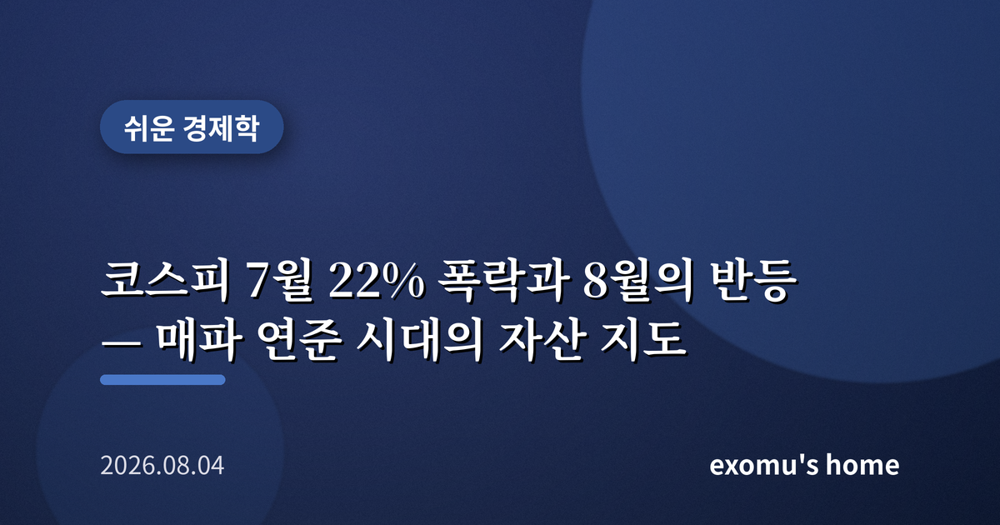
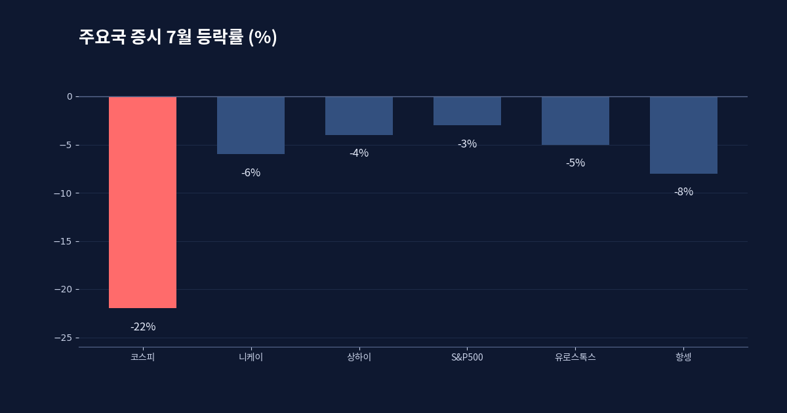
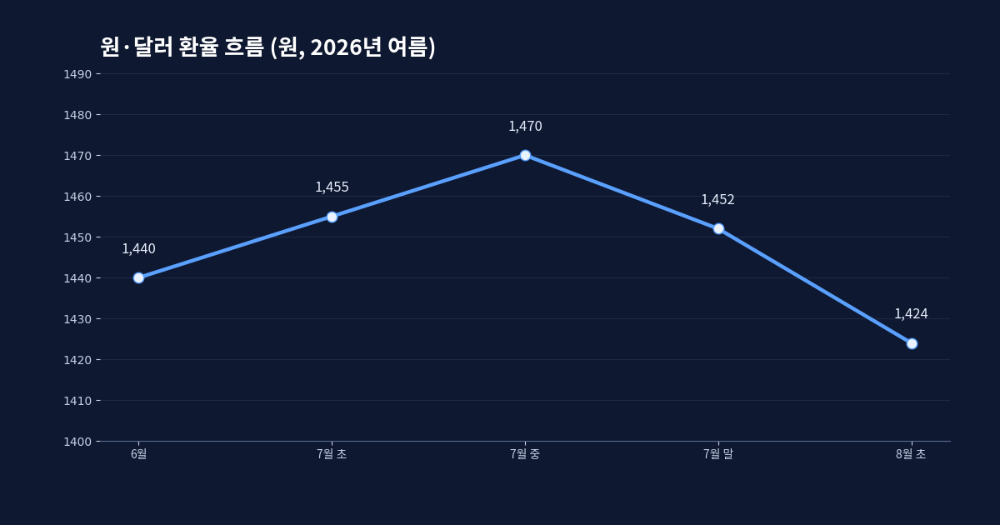
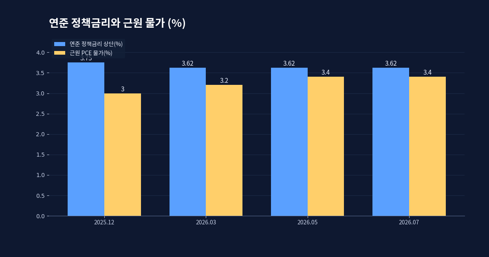
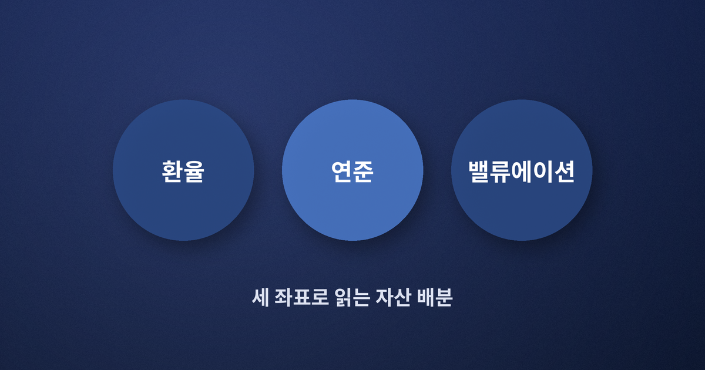

코스피 7월 22% 폭락과 8월의 반등 — 매파 연준 시대의 자산 지도

한 달 만에 5분의 1이 사라졌다
2026년 7월, 코스피는 한 달 동안 22% 가까이 빠졌다. 주요국 증시 가운데 낙폭 1위였다. 상반기 내내 뜨거웠던 지수가 여름의 문턱에서 급격히 식은 셈이다. 이런 숫자를 마주하면 사람의 마음은 두 갈래로 갈라진다. 하나는 '더 빠지기 전에 팔자'는 공포이고, 다른 하나는 '이제 바닥 아니냐'는 조급함이다. 그런데 급락이 지나간 자리에서 정작 필요한 것은 감정이 아니라 지도다. 무엇이 이 하락을 만들었고, 무엇이 반등의 조건인지를 좌표로 그려 두는 일 말이다.
8월로 넘어오면서 분위기는 조금씩 달라졌다. 여러 증권사는 코스피가 7월의 낙폭을 단계적으로 회복하며 하단을 높여 갈 것으로 내다봤고, 일부는 적정 가치 재진입 구간과 첫 저항선까지 제시했다. 반등의 씨앗은 있다는 뜻이다. 다만 그 씨앗이 자라려면 몇 가지 바깥 조건이 맞아떨어져야 한다.

환율이라는 첫 번째 좌표
급락장에서 외국인 자금의 향방을 결정하는 것은 대개 환율이다. 원화가 약해지면 외국인은 환차손을 우려해 주식을 팔고, 원화가 강해지면 같은 논리로 돌아온다. 다행히 7월 한때 1,470원까지 치솟았던 원·달러 환율은 8월 들어 1,420원대로 내려왔다. 여기에는 대형 반도체 기업의 대규모 해외 상장 자금 가운데 아직 환전되지 않은 달러 물량이 시장에 공급 우위를 만들 것이라는 기대가 얹혀 있다. 환율이 진정되면 외국인의 매도 압력도 함께 누그러진다.
환율은 단순한 숫자가 아니라 자금의 방향을 읽는 나침반이다. 지수가 아무리 싸 보여도 원화가 계속 밀리면 외국인은 들어오지 않는다. 반대로 환율이 안정되면 같은 밸류에이션이 갑자기 매력적으로 보인다. 그래서 급락장에서는 지수보다 환율을 먼저 보는 편이 순서에 맞다.

연준이라는 두 번째 좌표
바깥에서 유동성의 큰 물길을 트는 것은 여전히 연준이다. 7월 연방공개시장위원회는 기준금리를 3.50~3.75%로 동결했지만, 표결은 9대 3으로 갈렸다. 세 명의 지역 연은 총재가 오히려 인상을 주장하며 반대표를 던졌다. 근원 개인소비지출 물가가 지난해 말 3.0%에서 3.4%로 다시 올라섰고, 에너지 가격이 물가를 밀어 올렸기 때문이다. 시장은 이제 연내 한두 차례 인하가 아니라 인상 가능성을 저울질하고 있다.
금리를 더 올릴 수도 있다는 신호는 위험자산에 부담이다. 돈을 빌리는 값이 비싸지면 미래 이익을 앞당겨 반영하던 성장주의 논리가 흔들리고, 신흥국 증시로 향하던 자금도 몸을 사린다. 코스피의 7월 급락에는 이 매파적 분위기가 배경으로 깔려 있었다. 반등의 지속 여부 역시 연준의 말투가 어디로 기우는지에 크게 달려 있다.

공포가 아니라 배분으로
이 세 좌표 — 환율, 연준, 그리고 국내 증시의 밸류에이션 — 를 겹쳐 놓으면 급락장은 조금 다르게 보인다. 환율이 진정되고 물가가 정점을 지난다는 신호가 함께 나타날 때, 낙폭이 컸던 시장은 오히려 회복의 탄력이 크다. 반대로 물가가 재점화되고 환율이 다시 밀리면, 싸 보이는 지수도 더 싸질 수 있다. 어느 쪽도 확정된 미래가 아니기에, 한 방향에 전부를 거는 대신 현금과 위험자산의 비중을 나눠 두는 배분의 태도가 필요하다.

조금 더 실용적으로 옮기면 이렇다. 급락 직후에 전부를 사거나 전부를 파는 대신, 미리 정해 둔 비율을 지키며 조금씩 사고파는 규칙이 감정을 이긴다. 예컨대 하락으로 위험자산 비중이 목표보다 낮아지면 그만큼만 채워 사고, 반등으로 비중이 높아지면 그만큼만 덜어 내는 식이다. 이렇게 하면 바닥과 천장을 맞히려는 무리한 예측 없이도, 쌀 때 더 사고 비쌀 때 덜 사는 흐름이 자연스럽게 만들어진다. 좌표를 읽는 일과 규칙을 지키는 일은 그렇게 한 짝을 이룬다.
급락은 무섭다. 그러나 급락이 알려 주는 것은 시장이 끝났다는 사실이 아니라, 어떤 조건이 맞아야 다시 오르는지를 유난히 또렷하게 드러낸다는 점이다. 공포의 크기만큼 조건도 선명해진다. 그 조건을 좌표로 들고 있으면, 다음 국면에서 흔들리는 것은 시장이지 나의 판단이 아니게 된다.